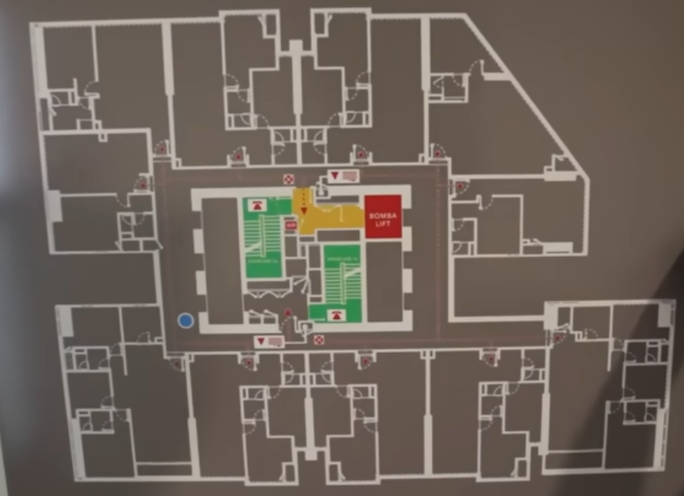
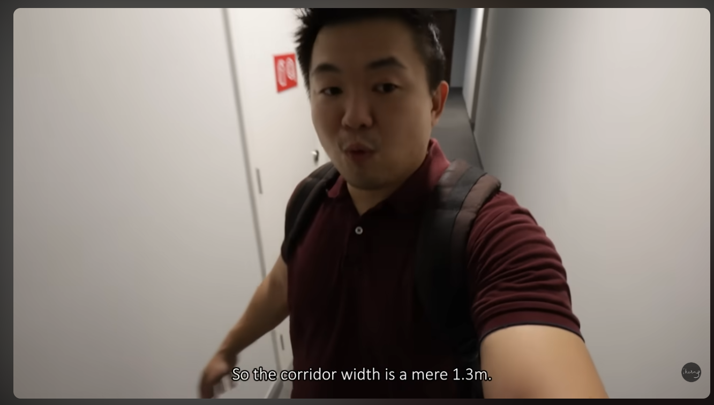
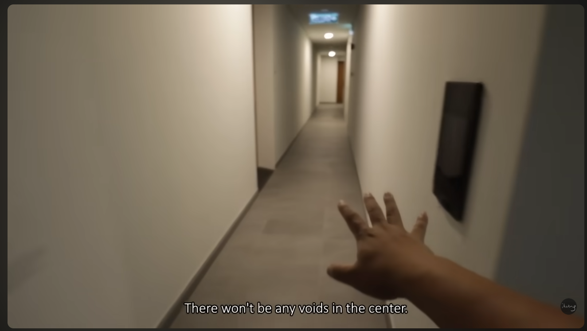

大將開發內部研究資料 (更新日期：2026年5月1日)
| 建案 | 建築結構 | 棟數與樓層 | 總戶數 | 價格 馬幣 (台幣 萬) | 單價 馬幣/平方英尺 (台幣/平方英尺) | 詳細格局與面積 | 屋齡 | 產權 | 備註與設施服務 | 外部連結 |
|---|---|---|---|---|---|---|---|---|---|---|
| TRX Residences | RC (鋼筋混凝土) | 2 棟 (53 與 57 層) | 896 | RM 1,100,000 - 11,000,000 (NT$ 881.1萬 - 8,811.0萬) |
RM 2,200 - 2,600+ (NT$ 17,622 - 20,826) |
|
2025 | 永久產權 (Freehold) |
|
地點地圖 Property Guru |
| Core Residence @ TRX | RC (鋼筋混凝土) | 3 棟 (50 層高樓) | 580 | RM 1,060,000 - 5,000,000 (NT$ 849.1萬 - 4,005.0萬) |
RM 1,971 - 3,447+ (NT$ 15,788 - 27,610) |
|
2024 | 永久產權 (Freehold) |
|
地點地圖 Property Guru |
| 8 Conlay (KSK Land) | RC (鋼筋混凝土) | 3 棟 (最高 68 層) | 1,062 | RM 2,300,000 - 6,000,000 (NT$ 1,842.3萬 - 4,806.0萬) |
RM 3,200 - 3,500 (NT$ 25,632 - 28,035) |
|
2024/2025 | 永久產權 (Freehold) |
|
地點地圖 Property Guru |
| Eaton Residences | RC (鋼筋混凝土) | 1 棟 (52 層) | 632 | RM 1,200,000 - 4,500,000 (NT$ 961.2萬 - 3,604.5萬) |
RM 1,600 - 2,200 (NT$ 12,816 - 17,622) |
|
2021 (已完工) | 租賃產權 (Leasehold) |
|
地點地圖 Property Guru |


圖 1：公共走廊寬度實測僅為 1.3 公尺。

圖 2：公共走廊無浪費空間,高效能.
| 指標項目 | TRX Residences 實測/規格 | 對標豪宅 (8 Conlay / Eaton) |
|---|---|---|
| 公共走廊寬度 | 1.3 公尺 (長廊型設計) | 1.5 - 1.8 公尺 (寬敞明亮) |
| 廚房通風條件 | 單元內嵌式，無外窗，依賴機械排風 | 多數房型具備獨立窗戶或開放式通風設計 |
| 單層居住密度 | 10-12 戶 (視塔樓而定) | 4-6 戶 (高隱私、低密度) |
| 室內天花板挑高 | 約 3.1 - 3.2 公尺 | 3.4 - 3.6 公尺 |
分析摘要：TRX Residences 側重於「城市機能整合」與「綠建築認證」，其與 10 英畝空中公園及購物中心之無縫連接為核心賣點。然而，若單純考量「室內居住寬敞度」與「單元隱私密度」，其硬體指標與 KLCC 傳統一線豪宅（如 8 Conlay）相比存在明顯差異。
| 房型 (Layout) | 預估月租金 (馬幣) | 保守投報率 (3-4% 空置率) | 樂觀投報率 (全租) | 租金負擔能力參考 |
|---|---|---|---|---|
| 1 房 (474 - 700 sqft) | RM 4,500 - 6,000 | ~4.2% | ~5.1% |
本地專業人士： 月薪 RM 6k - 10k 負擔 1 房租金較吃力 (需雙薪) 外籍高階主管： 月薪 USD 10k - 20k (約 RM 47k - 94k) 完全可負擔 2-3 房旗艦房型 |
| 2 房 (850 - 1,076 sqft) | RM 7,000 - 9,500 | ~3.8% | ~4.7% | |
| 3 房 (1,184 - 1,636 sqft) | RM 10,000 - 15,000 | ~3.5% | ~4.3% |
計算備註與腳註：
| 格局 | 面積範圍 (Sqft) | 上市售價 馬幣 (台幣 萬) |
|---|---|---|
| 1房 | 474 - 700 | RM 1.1M - 1.8M (NT$ 881.1萬 - 1,441.8萬) |
| 1+1房 | ~721 | RM 1.8M - 2.0M (NT$ 1,441.8萬 - 1,602.0萬) |
| 2房 / 2+1房 | 850 - 1,076 | RM 2.0M - 2.8M (NT$ 1,602.0萬 - 2,242.8萬) |
| 3房 | 1,184 - 1,636 | RM 2.9M - 5.0M (NT$ 2,322.9萬 - 4,005.0萬) |
| 4房以上 | 1,636+ | RM 5.6M - 11.0M (NT$ 4,485.6萬 - 8,811.0萬) |
* 匯率參考：1 MYR ≈ 8.01 TWD (匯率日期：05/01)。
* 註：本表僅供大將開發內部研究使用。數據來源包含 PropertyGuru、開發商官網及市場成交紀錄。